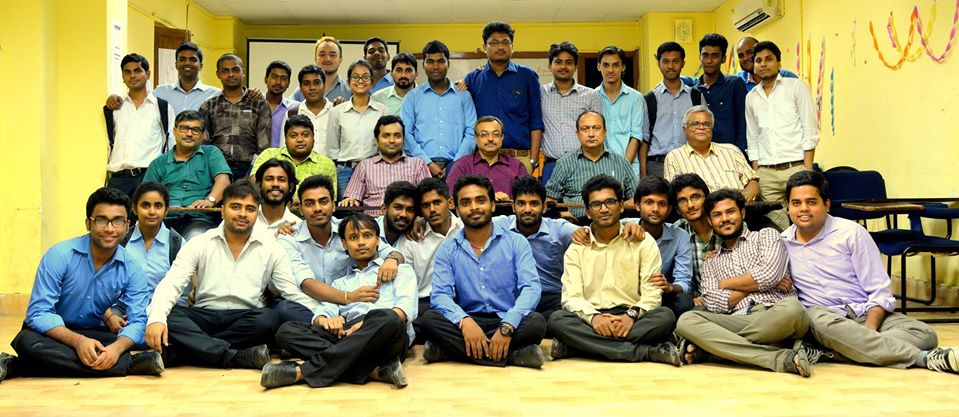

DR. Kaushik Bandyopadhyay
PROFESSOR
Geotechnical & Geo-environmental Engg
Education:
| Degree | Specialization | Institute Name | Passing Year |
|---|---|---|---|
| BE | Civil Engineeeing | JADAVPUR UNIVERSITY,KOLKATA | 1989 |
| ME | Geotechnical & Geo-environmental Engg | JADAVPUR UNIVERSITY,KOLKATA | 1993 |
| PhD | Geotechnical & Geo-environmental Engg | JADAVPUR UNIVERSITY,KOLKATA | 2003 |
Field of Specialization:
| Serial Number | Field of Specialization |
|---|---|
| 1 | Geotechnical & Geo-environmental Engg |
| 2 | Earthquake Geotechnical Engineering |
| 3 | Repair of Underground Structures |
Teaching Experience
| Institute | Position held | Period |
|---|---|---|
| JADAVPUR UNIVERSITY | Professor | 2009 to till date |
| JADAVPUR UNIVERSITY | Reader | 2001 to 2009 |
| JADAVPUR UNIVERSITY | Sr. Lecturer | 2000 to 2001 |
| JADAVPUR UNIVERSITY | Repair of Underground Structures | 1995 to 2000 |
Industrial Experience:
| Organization | Position held | Period |
|---|---|---|
| Superintendence Co. of India Pvt. Ltd. | Engineer | 01.06.1990 to 31.08.1991 |
| National Insulated Cable Co. of India Ltd | EngineeringGraduate Trainee | 28.08.1989 to 22.05.1990 |
Experience:
| serial number | experience | |
|---|---|---|
| 1 | Visited the Geotechnical and Environmental Engg. laboratory of University of Illinois at Chicago, Chicago, U.S.A and gathered research experience under the guidance of Prof. Krishna Reddy, Professor of Civil & Environmental Engg. of the same Institute. | |
| 2 | Visited the Manhattan College, New York, USA as a guest faculty in the year 2004. | |
| 3 | Visited the Land Reclamation site of Singapore near Changi Ferry terminal, Singapore as a member of the technical team from National University of Singapore, Singapore, in the year 2006 | |
| 4 | Visited the Tropical Marine Science Institute (TMSI), Singapore as an invited guest faculty in the year 2006. | |
| 5 | Undergone training as part of joint collaborative work between Tokyo Institute of Technology and Port and Airport Research Institute, Tokyo, Japan under the guidance of Prof. Jiro Takemura, Prof. Kusakabe and Dr. Watabe in the year 2007. | |
| 6 | Visited the Port and Airport Research Institute’s site at Haneda airport extension site, Tokyo as a member of the technical team from Tokyo Institute of Technology, Tokyo, Japan in the year 2007. | |
| 7 | Visited the Land Reclamation site of Haneda airport on Tokyo Bay as a member of the technical team from Tokyo Institute of Technology, Tokyo, Japan in the year 2007. | |
| 8 | Visited the Hong Kong Polytechnic Institute, Hong Kong as an invited guest faculty in the year 2011. | |
| 9 | Undertaken training on DMT and SDMT Flat Dilatometer equipment under the guidance of Prof. S. Marchetti at Studio Prof. Marchetti S.r.l., Rome , Italy in the year 2013. | |
| 10 | Undergone training on penetrometer TG 63-150 equipment under PAGANI Geotechnical Equipment, Calendasco, Piacenza Italy in the year 2014. | |
Conference Publication
| Title | Conference | Year | Role |
|---|---|---|---|
| Phytoremediation of Cadmium from Contaminated Water by Pistia stratiotes | International Conference on Energy Technology, Power Engineering and Environmental Sustainability | 2014 | Co-Author |
| Efficiency of Spirodela polyrhiza for removal and uptake of Pb and Ni | International conference on Energy Technology, Power Engineering and Environmental Sustainability | 2014 | Co-Author |
| An Experimental Study to Improve the CBR of Stabilized Fly ash in Highway Construction | Indian Geotechnical Conference | 2013 | Author |
| Ground Improvement in soft deltaic deposits some case studies | 18th International Conference on Soil Mechanics and Geotechnical Engineering | 2013 | Author |
| Computational Study on the Effects of Tannery Wastes on Highway Fly ash Embankment | Indian Geotechnical Conference | 2012 | Author & Presenter |
| See More |
Journal Publication
| Title | Journal | Year | Role |
|---|---|---|---|
| A Laboratory Study on Conventional CBR and DCP Method in the Mould | Indian Highways, Indian Road Congress | 2014 | Author |
| Fixed Bed Column Adsorption Studies Using Fly Ash for Removal of Cadmium from Aqueous Solution | Journal Inst. Eng. India Ser. A | 2013 | Author |
| Split Tensile Strength Test of Lime and Cement Stabilized Fly ash | Indian Highways | 2013 | Author |
| Cadmium Removal by Lemna minor and Spirodela polyrhiza | International Journal of Phytoremediation | 2013 | Co-Author |
| Arsenic uptake by Lemna minor in hydroponic system | International Journal of Phytoremediation | 2012 | Co-Author |
| A Comparative Study on the Laboratory and Field CBR values of Granular Sub Base Material for Pavement Construction | Indian Highways, Indian Road Congress | 2013 | Author |
| Phytoremediation of cadmium and nickel by Spirodela polyrhiza | Indian Journal of Environmental Protection | 2011 | Co-Author |
| Arsenic uptake by Lemna minor in hydroponic system | IAdsorption of Cadmium using flyash: Equilibrium & Kinetic Study | 2010/td> | Author |
| Efficacy of Fly ash for removal of chromium from wastewater | Journal of Land Contamination and Reclamation | 2010 | Author |
| Arsenic uptake by Lemna minor in hydroponic system | International Journal of Phytoremediation | 2012 | Co-Author |
| A Laboratory Column study for Adsorptive Removal of Cadmium by Fly Ash | Geocongress 2008: eo-institute of ASCE, New Orleans, Louisiana, USA | 2008 | Author |
| Adsorptive Removal of Cadmium by Fly A-A column Study | Journal of the Institution of Public Health Engineers | 2008 | Author |
| Adsorptive Removal of Cadmium by Fly A-A column Study | Journal of the Institution of Public Health Engineers | 2008 | Author |
| Desorption Study of a Fly Ash Bed Previously Exposed to Chrome-Bearing Wastewater | Journal of Land Contamination and Reclamation | 2007 | Author |
| Use of clay-bed liner for retention of chromium from aqueous media: a laboratory study | Journal of the Institution of Engineers (India) - Environmental Section | 2005 | Author |
| Permeation study to test the feasibility of retention of hexavalent chromium in a natural clay liner in a sanitary landfill | J. Waste Recycling and Resources Management in the Developing World | 2001 | Author |
Awards
| Awarded by | Award name | Year |
|---|---|---|
| World Bank funded Technical Education Quality Improvement Programme (TEQIP) | International Travel Grant | 2013 |
| Jadavpur University under the Unassigned grant of the UGC. | International Travel Grant | 2013 |
| World Bank funded Technical Education Quality Improvement Programme (TEQIP) | International Travel Grant | 2011 |
| Journal of Institution of Engineers (India) | Gold Medal for Best Paper Award "Nawab Zain Yar Jung Bahadur Memorial Prize" | 2010 |
| World Bank funded Technical Education Quality Improvement Programme (TEQIP) | International Travel Grant | 2007 |
| World Bank funded Technical Education Quality Improvement Programme (TEQIP) | International Travel Grant | 2006 |
| All India Council for Technical Education and Dept. of Science and Technology | International Travel Grant | 2004 |
| Council of Scientific & Industrial Research, NPL Campus, Pusa, New Delhi | Senior Research Fellowship | 1993 |
Project Works
| Project Title | Worked As | Funding Agency | Amount | Duration | Period |
|---|---|---|---|---|---|
| Study on the feasibility of removal of inorganic Toxic Contaminants from water and wastewater using Coagulation-Flocculation Method | Principal Investigator | Dept. of Environment, Govt. of West Bengal, | 8,08,500 | 2years | 03.10.2012 to 02.10.2014 |
| Feasibility Studies for removal of heavy metals from water and wastewater using a few low cost technologies | Principal Investigator | Dept. of Environment, Govt. of West Bengal, | 9,96,000 | 3years | 01.04.2009 to 01.04.2012 |
| Studies on the efficacy of low cost adsorbents for the removal of Fluoride and Cadmium from wastewater | Principal Investigator | Dept. of Environment, Govt. of West Bengal, | 8,74,300 | 3years | 01.04.2006 to 01.04.2009 |
| Feasibility Studies for removal of heavy metals from water and wastewater using a few low cost technologies | Principal Investigator | Dept. of Environment, Govt. of West Bengal, | 9,96,000 | 3years | 01.04.2009 to 01.04.2012 |
| Usefulness of fly ash as a liner to retain hazardous heavy metals | Principal Investigator | Dept. of Environment, Govt. of West Bengal, | 9,96,000 | 3years | 01.04.2009 to 01.04.2012 |
| Feasibility Studies for removal of heavy metals from water and wastewater using a few low cost technologies | Principal Investigator | University Grants Commission | 3,66,000 | 3years | 01.07.2001 to 30.06.2004 |
Invite Lectures
| Title | Organised By | Venue | Year |
|---|---|---|---|
| Technology options for fluoride & cadmium removal | Society of Civil Engineers | Jadavpur University | 2007 |
| Feasibility of Using Fly Ash Bed for Safe Disposal of Chrome-Bearing Wastes and Technology Options for Fluoride and Cadmium Removal | Tokyo Institute of Technology, Japan | Tokyo Institute of Technology, Japan | 2007 |
| Removal of Chromium by fly ash | National University of Singapore | National University of Singapore | 2006 |
| Landfill Liners | Civil Engg. Dept., Widener University, PA, USA | Civil Engg. Dept., Widener Univ., PA, USA | 2004 |
| Removal of heavy metals by fly ash | University of Illinois at Chicago, Chicago | Civil & Materials Engg. Dept. | 2004 |
professional membership
| Serial Number | Links |
|---|---|
| 1 | Institution of Engineers (India) |
| 2 | International Society for Soil Mechanics and Foundation Engineering |
| 3 | Indian Geotechnical Society |
| 2 | Society of Civil Engineers, Jadavpur University |
| 2 | Geotechnical Study Circle, Kolkata Chapter of the Indian Geotechnical Society |
QIP CourseAttended
| Program Name | Organised By | Year |
|---|---|---|
| National Seminar on Ground Settlement due to TBM tunnelling and embankment Construction (Under TEQIP II) Programme | Jadavpur University (Under TEQIP Phase II) & Indian Geotechnical Society (Kolkata Chapter) | 2014 |
| National Seminar on Emerging Trends in Ground Improvement | Jadavpur university | 2009 |
| International Symposium on Innovative World Of Concrete (IWC-98) | Jadavpur university | 1998 |
Seminar
| Program Name | Organised By | Venue | Year |
|---|---|---|---|
| 18th International Conference on Soil Mechanics and Geotechnical Engineering | French Geotechnical Society | Paris, France | 2013 |
| 14th Asian Regional Conference on Soil Mechanics and Geotechnical Engineering | Hong Kong, Geotechnical Society | Hong Kong, China | 2011 |
| National Seminar on Geohazards of Underground Structure | Kolkata | Kolkata | 2010 |
| National Seminar on Emerging Trends in Ground Improvement | Kolkata | Kolkata | 2009 |
| All India Workshop on Save the Ganga | Kolkata | Kolkata | 2009 |
| See More |
Session chaired
| Program Name | Session Title | Organised By | Venue |
|---|---|---|---|
| Indian Geotechnical Conference | Environmental Geotechnique | Indian Geotechnical Chapter,Rourkee Chapter | IIT,Rourkee |
| 2-days International Workshop on Alternate Fuels in IC Engines & GIS Application in Highway Engg. | TEQIP Workshop | Jalpaiguri Govt. Engg. College, Jalpaiguri, West Bengal, India | College, Jalpaiguri, West Bengal, India |
| 19th International Conference on Solid Waste Technology and Management Philadelphia, U.S.A. | Waste Technology | Philadelphia, USA | Philadelphia, USA |